Кератин, ботокс, холодне відновлення, реконструкція · Житомир
без нових дописів. До паузи було 4 публікації на тиждень. Сторіс ви ведете, стрічка стоїть.
медіана переглядів, коли ви в кадрі з гумором. Рілси лише з волоссям: 999.
рілси вже є: 995, 1 072, 764. Поки нижче вашої медіани 1 180, але їх легко посилити.
публікацій лише з хештегами. Під 10 найпопулярнішими рілсами немає запрошення записатися.
Показуємо ту частину екрана, де щось змінюється. Натисніть на картинку, щоб відкрити весь екран.
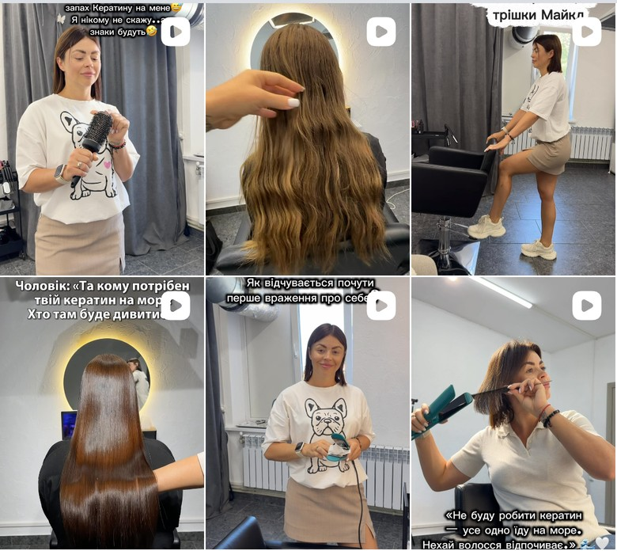
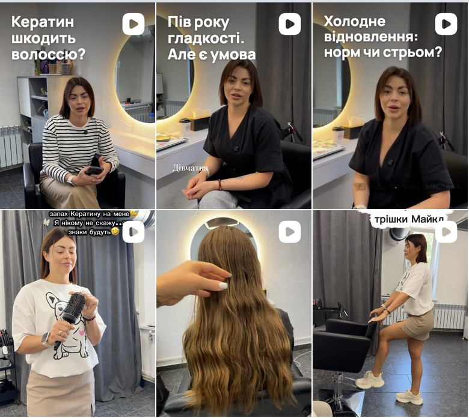
Нових рілсів немає з 15.07. Варто два-три на тиждень, один із них розмовний, з обкладинкою-питанням в одному стилі.
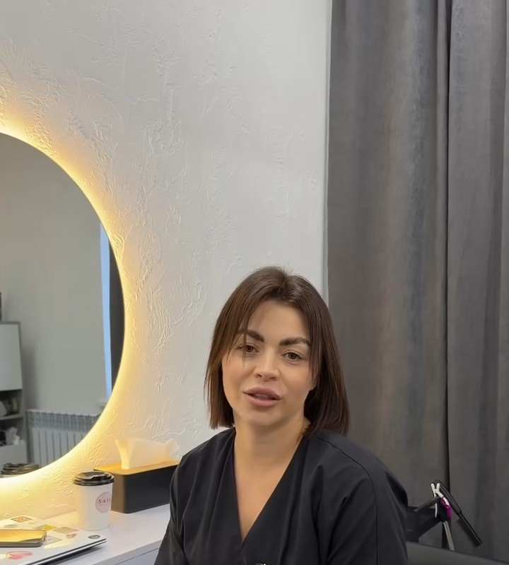
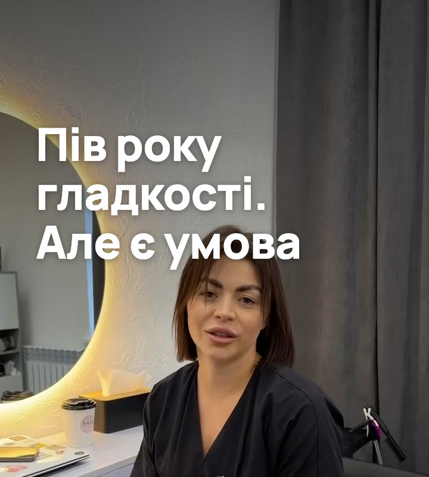
Зараз перша секунда: «Дівчатка» дрібним шрифтом, тему не видно (764 переглядів). Варто: тема великим текстом одразу.
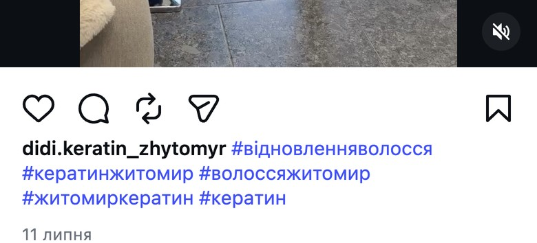
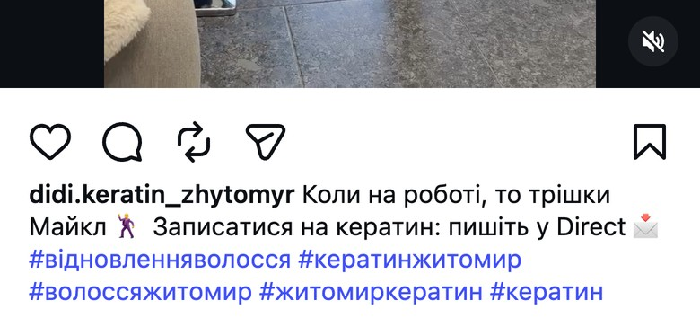
Під найпопулярнішим рілсом (4 129) лише хештеги. Варто: рядок до жарту і запрошення записатися в Direct.
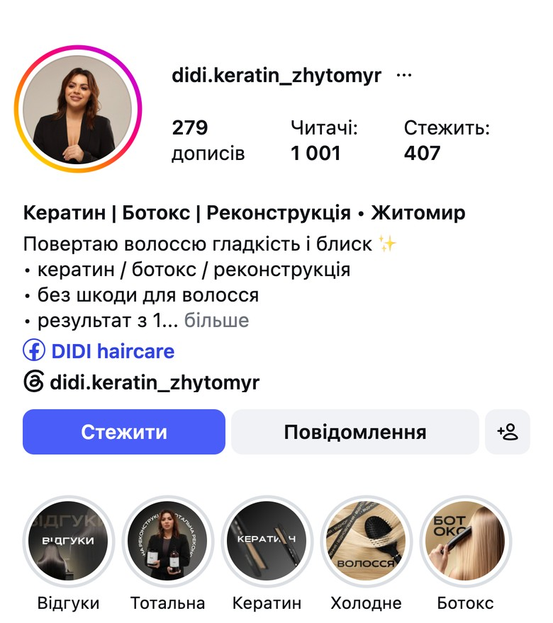
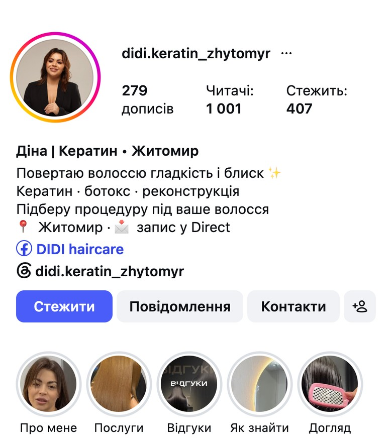
Варто: ім'я в шапці, «Житомир · запис у Direct», кнопка «Контакти» і актуальні з відповідями: про вас, послуги, як знайти, догляд.
Харизма працює. 17 з 22 рілсів, де ви в кадрі з гумором, вище вашої медіани.
Біо має основу. Послуги, місто і запис через Direct уже є.
Живі відгуки і впізнаваний салон з круглим дзеркалом.
Колаборація. Спільний рілс з тренеркою зібрав 9 229 переглядів, найбільше за весь період.
Розклали всі 44 ваші рілси на три типи.
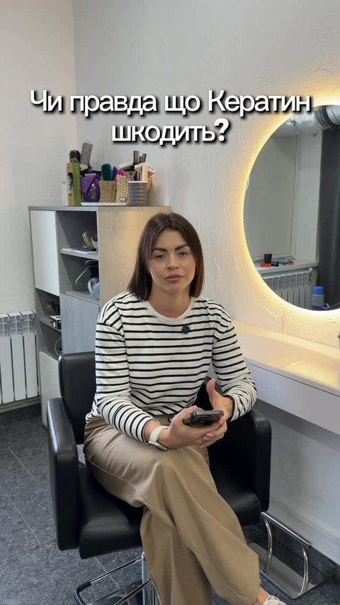
995«Чи правда, що кератин шкодить?»
29.04 · коментарів: 0
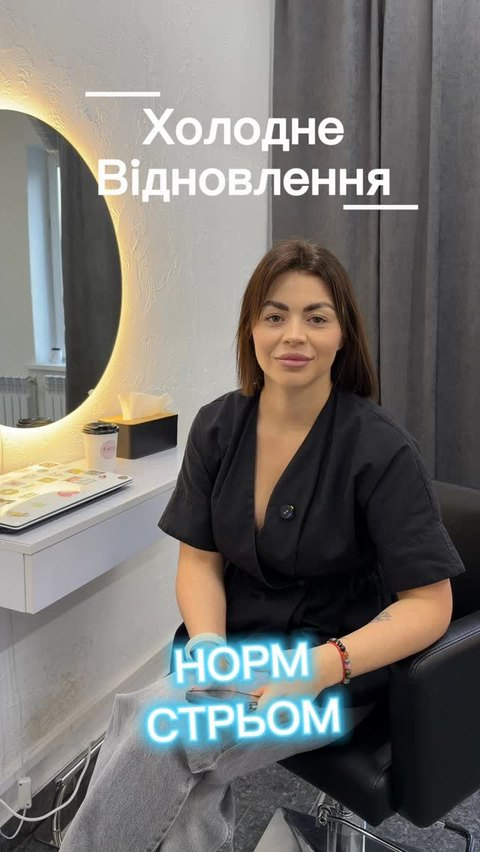
1 072«Холодне відновлення: норм чи стрьом?»
08.05 · коментарів: 0
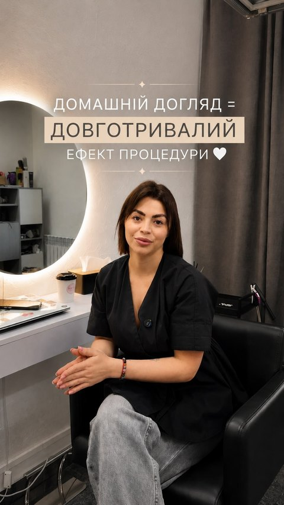
764Домашній догляд: «50% дає процедура»
13.05 · коментарів: 0
Усі три зняті сидячи одним планом і довші за гумористичні: 37, 54, 22 с проти 12,5 с. гіпотезаЧастина глядачів іде до суті, бо перший кадр статичний.
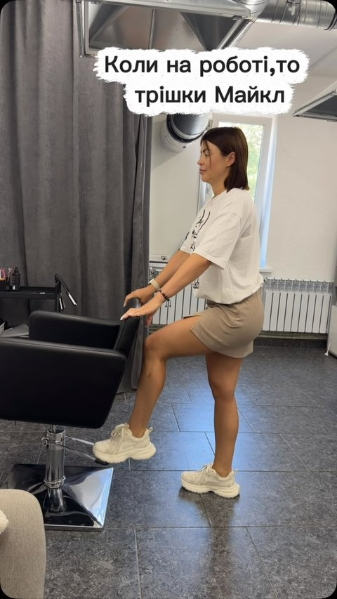
4 129Танець «трішки Майкл»
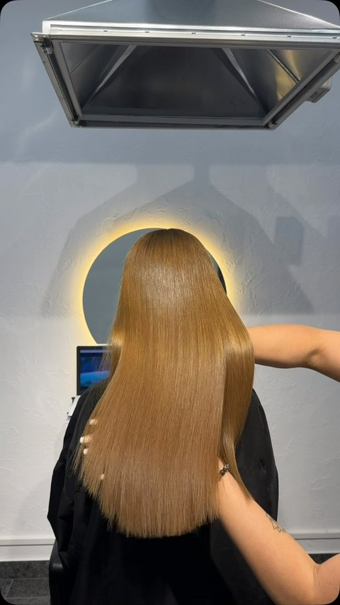
2 520Кучеряве волосся стає прямим
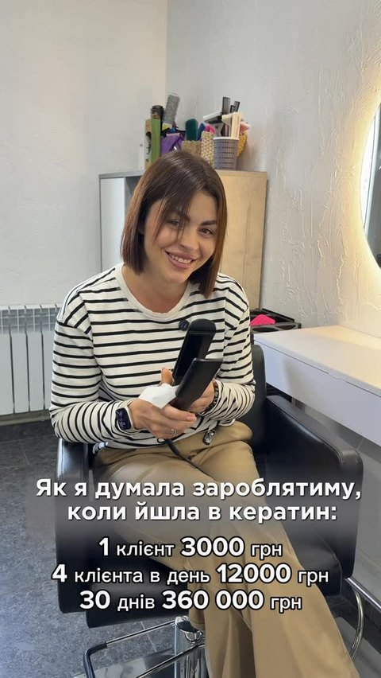
2 319«Як я думала заробляти»
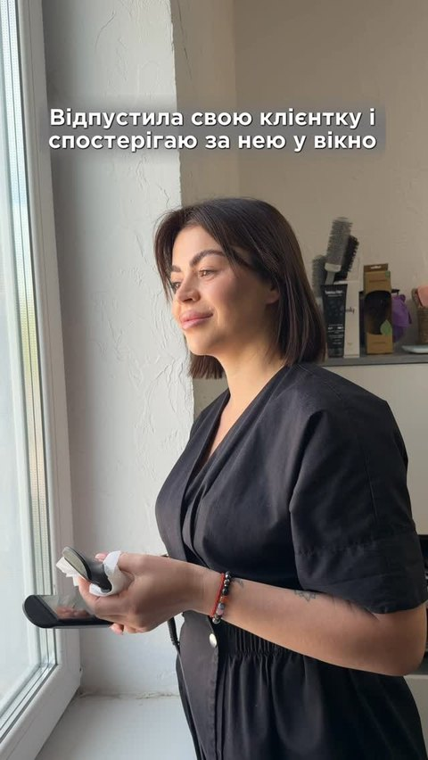
2 264Дивиться у вікно на клієнтку
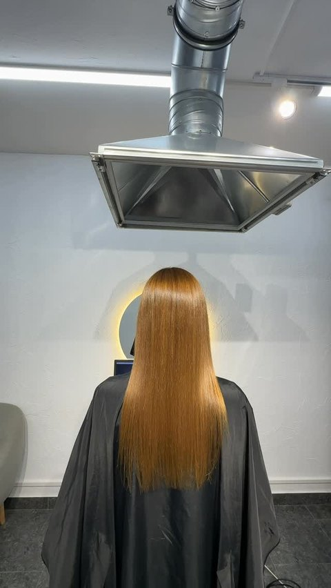
2 065Половина вже гладка, половина ні
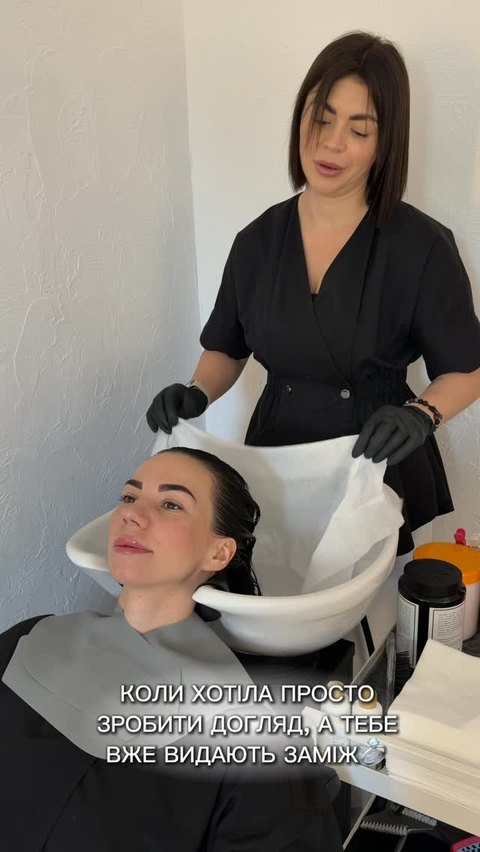
2 065«А тебе вже видають заміж»
4 з 6: ви в кадрі з жартом. Жарт або зміну на волоссі видно з першого кадру. П'яте місце ділять два рілси з 2 065.
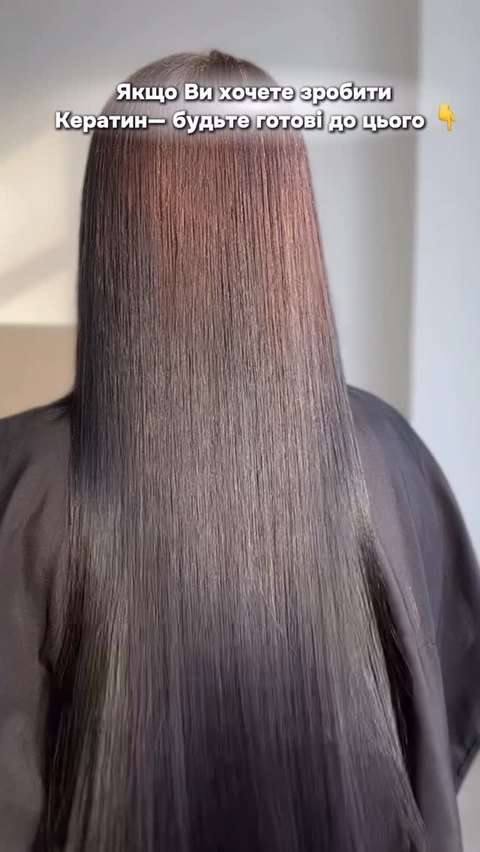
791Волосся, пояснення лише в підписі
Домашній догляд: «50% дає процедура»
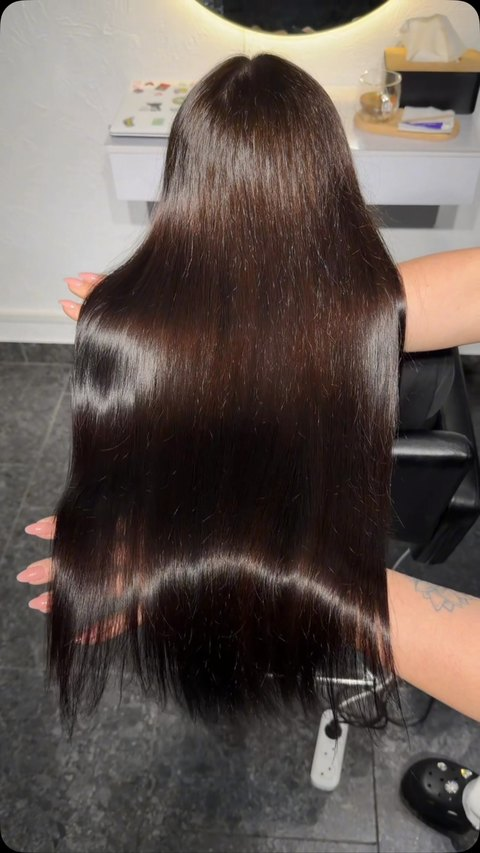
743Процес миття під музику
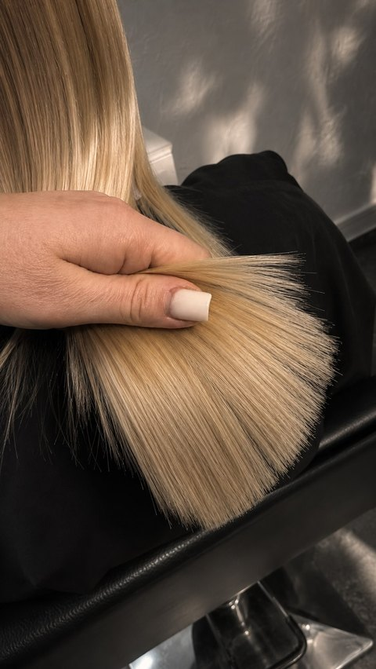
700Світле волосся до/після
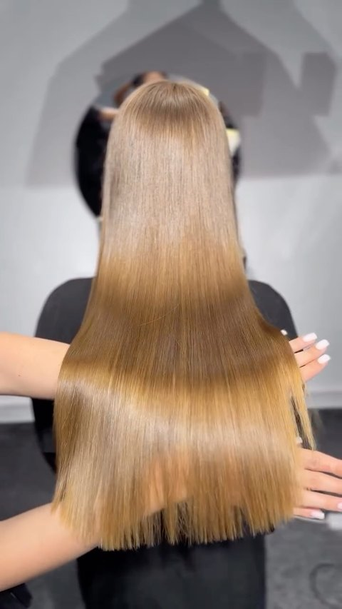
620Волосся до/після під пісню
4 з 5: волосся під музику, без вас у кадрі. П'ятий: розмовний, знятий сидячи.
Чотири розмовні рілси, де ви говорите в кадрі, з вашою живою манерою з гумористичних відео.
Теми з питань клієнток: як обрати між кератином, ботоксом, холодним відновленням і реконструкцією, міфи про кератин, догляд після, скільки тримається результат.
У кожному: тема першою фразою, результат на волоссі в перші секунди, рух у кадрі, один заклик написати в Direct.